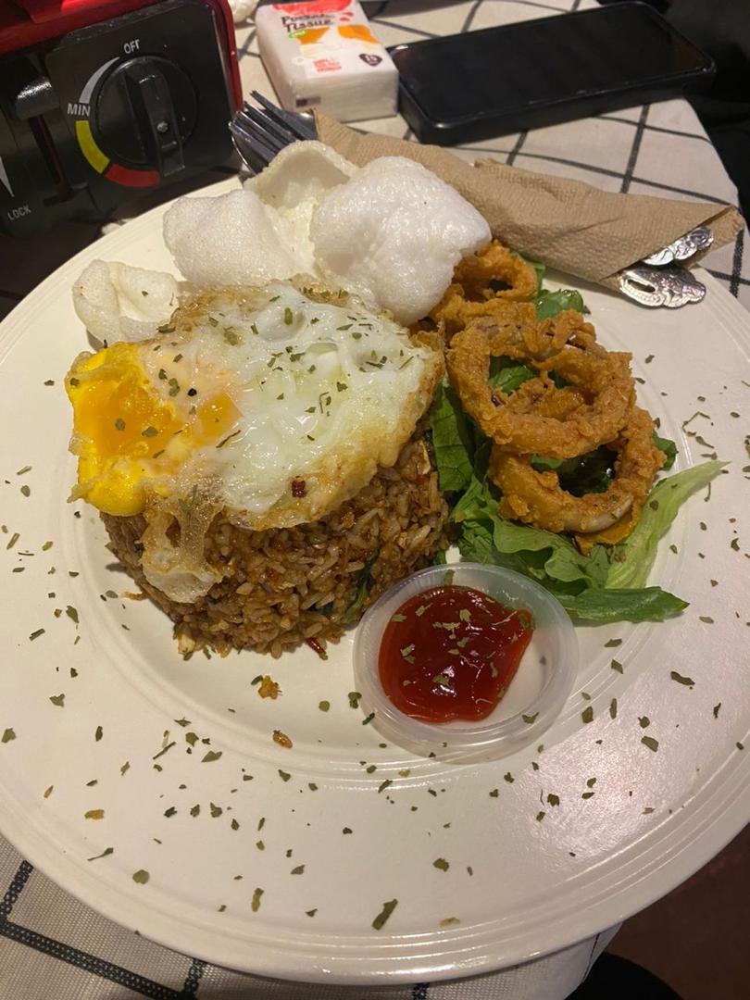
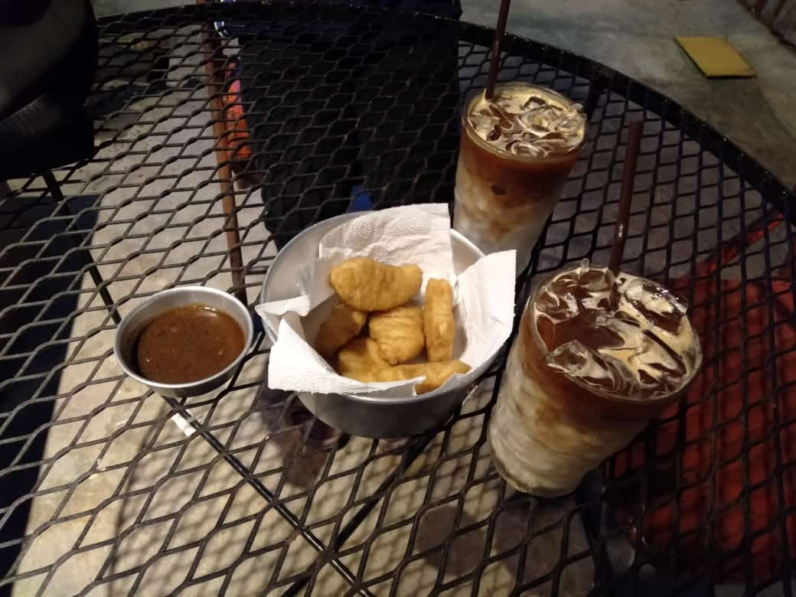
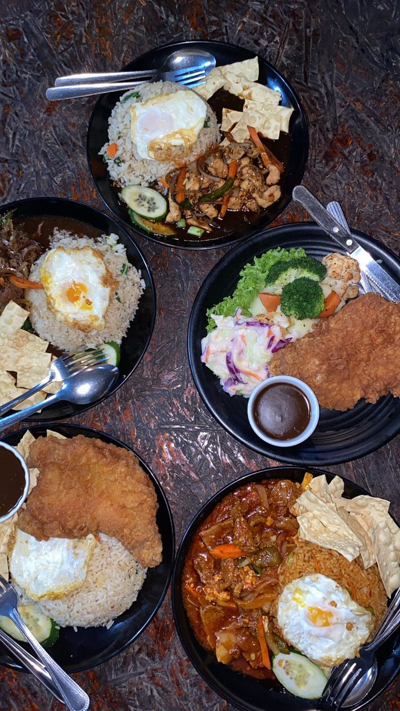
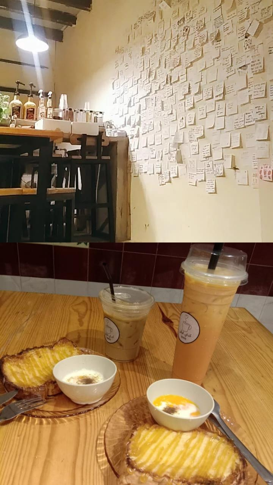
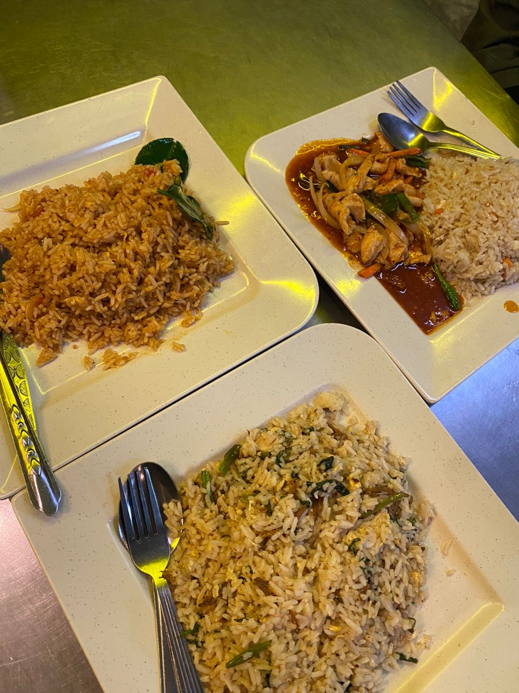
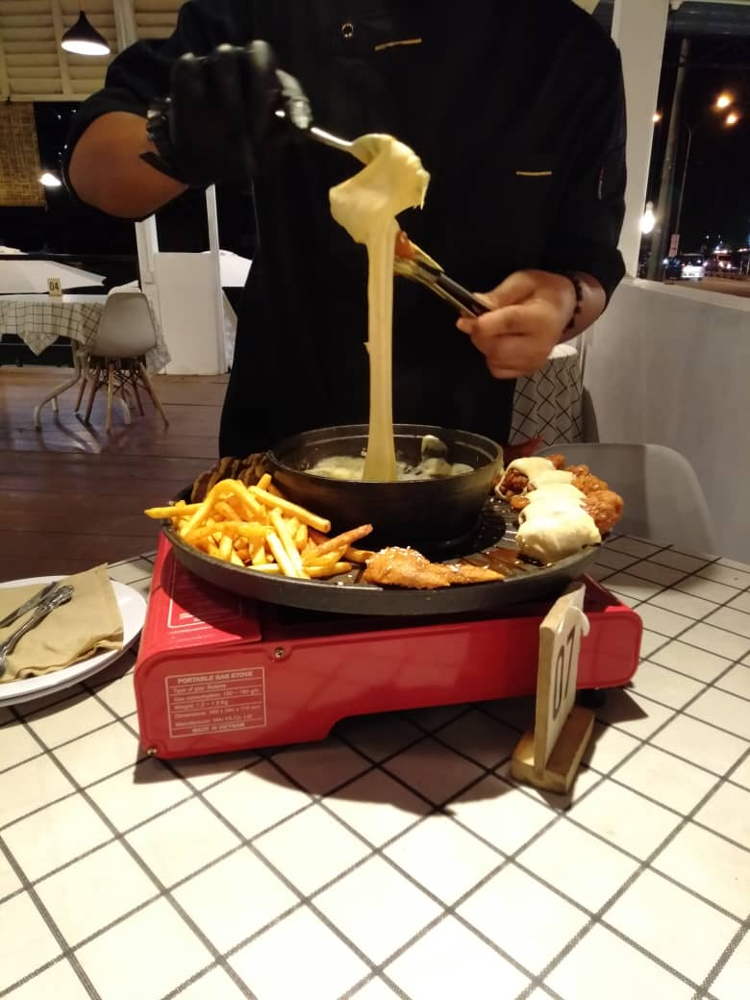
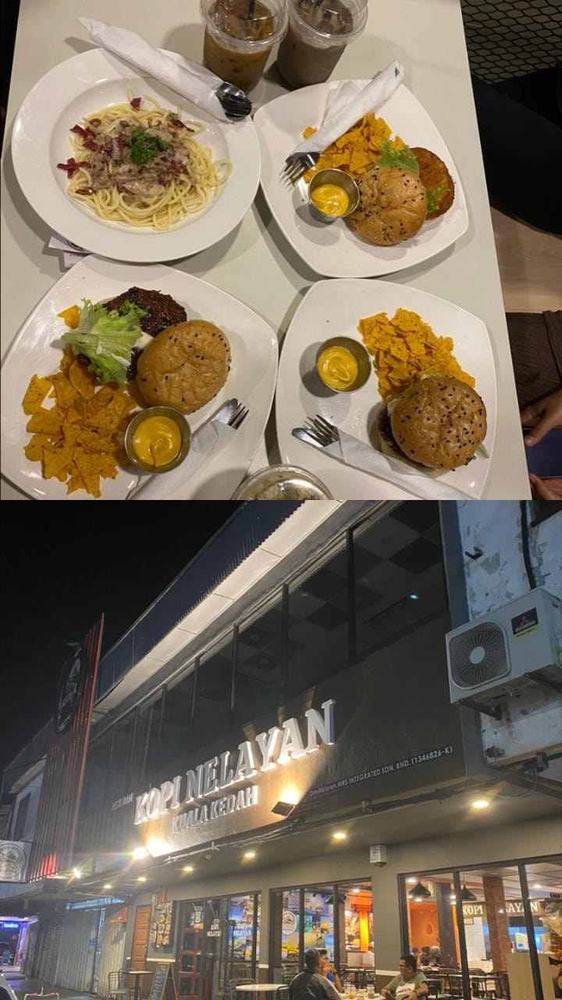

Food Hunting

Delicious Pulut Ayam at Padang Besar features sticky glutinous rice paired with flavorful, marinated chicken, and aromatic herbs, creating a mouthwatering culinary delight.

Special fried rice at Cafe Romah Putih in Alor Setar is a delightful mix of fragrant rice, fried squid, tender chicken, fresh vegetables, and aromatic spices, tender chicken, fresh vegetables, and aromatic spices.

Enjoy two rich caramel coffees paired with crispy, golden chicken nuggets—perfectly savory bites to complement your sweet, creamy brew.

Chicken chop at Port Dickson features succulent, grilled chicken with a crispy coating, served with a side of savory fried rice. Delicious!

Roti telur is a savory Malaysian flatbread with egg, perfect for breakfast. Pair it with refreshing iced tea or iced Nescafe.

Delicious fried rice features savory vegetables and perfectly seasoned grains. It's an affordable, satisfying meal for all.

In Alor Setar, the famous spicy chicken Korean dish is an explosion of flavors, featuring tender chicken with fiery seasoning.

Indulge in succulent burgers bursting with flavor and exquisite pasta dishes at Cafe Kopi Nelayan, a true culinary delight!